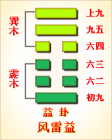

第四十二卦初九爻详解 第四十二卦六二爻详解 第四十二卦六三爻详解
第四十二卦六四爻详解 第四十二卦九五爻详解 第四十二卦上九爻详解
周易第四十二卦 益 风雷益 巽上震下
益：利有攸往，利涉大川。
彖曰：益，损上益下，民说无疆，自上下下，其道大光。利有攸往，中正有庆。利涉大川，木道乃行。益动而巽，日进无疆。天施地生，其益无方。凡益之道，与时偕行。
象曰：风雷，益;君子以见善则迁，有过则改。
初九：利用为大作，元吉，无咎。象 曰：元吉无咎，下不厚事也。
六二：或益之，十朋之龟弗克违，永贞吉。王用享于帝，吉。象曰：或益之，自外来也。
六三：益之用凶事，无咎。有孚中行，告公用圭。象曰：益用凶事，固有之也。
六四：中行，告公从。利用为依迁国。象曰：告公从，以益志也。
九五：有孚惠心，勿问元吉。有孚惠我德。象曰：有孚惠心，勿问之矣。惠我德，大得志也。
上九：莫益之，或击之，立心勿恒，凶。象曰：莫益之，偏辞也。或击之，自外来也。
益卦卦象，风雷益卦的象征意义
益卦，本卦是异卦相叠，下卦为震，上卦为巽。巽为风，震为雷。当雷声大作时，震动它上面巽风。巽风刮起来了，就使地上的万物得益。风吹万物，往往自上而来，从这个角度来讲，所谓益者，是指上者使下者得益。
从另一个角度来说，当雷声大作，震起巽风，巽风强劲，把雷声吹到遥远的地方。风雷激荡，其势愈强，雷愈响，风雷相助互长，交相助益。正如上级使下级得益，从而下级会更加拥护上级，从而上下得益。
益卦位于损卦之后，《序卦》中解释道：“损而不已必受益，故受之以益。”一直减损下去，接着一定要有所增益。益卦与损卦为正覆关系，亦即现在要损上益下。
《象》中这样分析益卦：风雷，益;君子以见善则迁，有过则改。这里指出：益卦的卦象是震下巽上，是为“风雷益”。刮风的时候，雷鸣增其威力;打雷时，强风益其声势。狂风和惊雷互相激荡，相得益彰之表象，象征“增益”的意思;君子应当由此领悟，取法别人的优点来增益自己的德行，看到良好的行为就马上向它看齐，有了过错就马上改正，不断增强自身的美好品德。
益卦象征增益，属于上上卦。《象》中这样来断此卦：时来运转吉气发，多年枯木又开花，枝叶重生多茂盛，几人见了几人夸。
【益卦卦象，风雷益卦的象征意义释义】
此卦卦名为益。“益”的下面是一个器皿，上面指溢出的水，是“溢”的本字，本义为水从器皿中漫出。它的引申义为增加、增益、增强。不停地减损，就会出现损极而反的增益，所以损卦之后便是益卦。
卦画：益卦的卦画为外面三个阳爻，里面三个阴爻，其排列顺序正好与损卦的卦画相反。
卦象：从卦象上进行分析，益卦的上卦为巽为风，下卦为震为雷，风雷相益便是益卦的卦象。雷在天空中震动，大地上会刮起疾风，风使雷声更显威猛，所以说风雷相益。益卦是从否卦变化而来，即否卦的上九爻与初六爻互换位置便成为益卦，上九爻来到下面补益下卦，所以益卦有“损上益下”的含义。
关键词：周易,益卦,风雷益,巽上震下
益卦：有利于出行。有利于渡过大江大河。
初九：有利于大兴土木。大吉大利，没有灾祸。
六二：有人送给价值十朋的大龟，不能不要。占得长久吉兆。周武王克商，祭祝天帝，吉利。
六三：因武王去世，祭祝时增加人牲，没有灾祸。抓到了俘虏，中途报告周公举行祭把。
六四：东征胜利后，班师回来的路上报告周公成王有命，把殷商遗民处理好有利。
九五：抓到俘虏，好心待他们，不必追究。大吉大利。抓到俘虏，用财物优待使他们对我感激。
上九：没有人帮助，还有人来攻击。这时内心不坚定，必然凶险。
①益是本卦的标题。益的意思是增益。全卦内容是说明损益的道理，与“损卦”构成一个组卦。标题的“益”字是卦中多见词。
②用：于。大作：大兴土木，建筑。
③益之：这里的意思是祭把时增加人牲。用：因为。凶事：丧事，这里指周武王去世。
④中行：中途。用圭：指祭把，因为祭把时要执畦(即圭)，所以用来代指。
⑤依：即殷，指殷代。
(6)惠心：安抚，好心。勿问：不必追问。
(7)德：用作‘得”，这里指所获财物。
(8)莫：没有人。益：帮助。
(9)击：攻击。
(10)恒：长久，坚持不变。